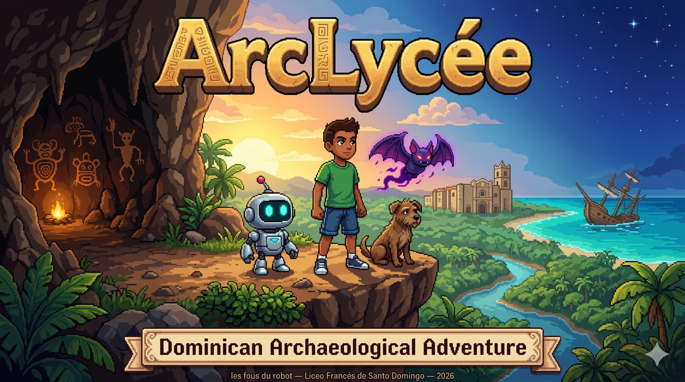

A 2D educational RPG video game to explore the archaeological heritage of the Dominican Republic. Created by les fous du robot from the Robotics class at the Liceo Francés de Santo Domingo — 2026.
An adventure through 5,000 years of Dominican history.
You play as Pepito or Pepita, a 14-year-old with Taíno, Spanish, and African ancestry. One day, while walking through a construction site in Santo Domingo, you discover a mysterious relic. When you touch it, the ground gives way and you fall into the Cuevas del Pomier — a real cave system with thousands of Taíno petroglyphs.
Thus begins your adventure as an accidental archaeologist. With three companions — a digging robot, a stray dog, and a cemí spirit — you'll travel from Taíno settlements to Santo Domingo's Zona Colonial, facing conflicts between modern development and heritage preservation.
Not everything is solved by fighting. Inspired by Undertale, the game offers a full pacifist route: convince your adversaries through dialogue, negotiation, and civic activism.
Free-roam map with 9 nodes, Super Mario World style. The player moves a sprite freely and activates nodes by approaching them.
Three unique allies that accompany you throughout the adventure.
Digging robot with metal detection
Obtained from Dr. Martínez in the Pomier Caves. Detects buried objects with radar pulse (F key). 100 energy max, 10 per use.
Stray dog tracker
Adopted in Taíno Settlement I. Has a 50px "sniff radius" — wags tail when hidden objects are near.
Protective spirit with 6 power levels
Granted by Behique Yuisa in Taíno Settlement II. Gains powers by finding botijas (vessels):
| Level | Botijas | Power |
|---|---|---|
| 1 | 1 | Echo-Location |
| 3 | 3 | Wing Gust |
| 5 | 5 | Ear of the Past |
| 8 | 8 | Stunning Screech |
| 10 | 10 | Cemí Vision |
Robotics Class at the Liceo Francés de Santo Domingo — 2026
Easter egg: Legendary Spoon
Easter egg: Speed Fries
Easter egg: Archaeological Shawarma
Easter egg: Ancient Lightsaber
Easter egg: Prankster's Sushi
Easter egg: Epic Guitar
Easter egg: Smart Ball
Easter egg: Legendary Burger
Easter egg: Archaeological Swiss Knife
The Les Fous du Robot team is pleased to present its innovative preliminary project: a video game designed to popularize Dominican archaeology among young audiences. The title is yet to be defined, but this project incorporates many aspects of our archaeological heritage. It is the result of a collaborative research effort carried out throughout the year by our robotics group. It is important to emphasize that AI only comes into play at the end of the research process (mid-February).
Here are the key stages of our investigation:
Several working sessions with Carlos Miranda, our AI specialist, made it possible to write the "prompt" intended for the AI to produce the game. Below you will find the link to the beta version. We welcome your feedback to improve it before our next competition on Saturday April 11 and Sunday April 12.
Not very accustomed to video games (unlike my children), I nevertheless embarked on the adventure with pleasure, fascinated but also aware of the immense power — and responsibilities — that AI represents.
A special thank you to Carlos Miranda, a student's father, for his invaluable collaboration.
Enjoy this weekend with your family to discover, appreciate, and why not, constructively critique this trial version.
Best regards,
Nicolas Droulers